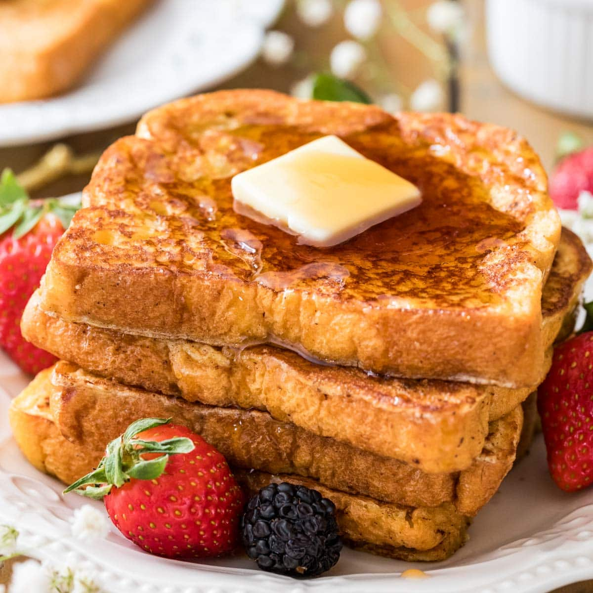

French Toast
An easy and quick dish, this French Toast recipe will make its way
into your new recipe book, and it's here to stay!
Prep Time
- Preparation: 5 minutes
- Cooking: 5 minutes
- Total: 10 minutes
Ingredients
- 1 egg
- 1/4 cup of milk
- 1/2 tsp of cinnamon
- 1 tsp of vanilla
- Bread of choice
Instructions
- Whisk egg, vanilla and cinnamon in a dish. Stir in milk.
- Dip bread slices in egg mixture, turn to coat both sides evenly.
- Cook on lightly greased skillet on medium until cooked through and brown on both sides.
- Enjoy with syrup and fruit (we recommend blueberries and raspberries) !